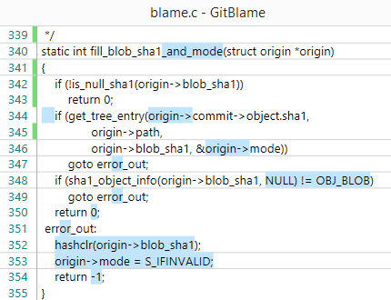
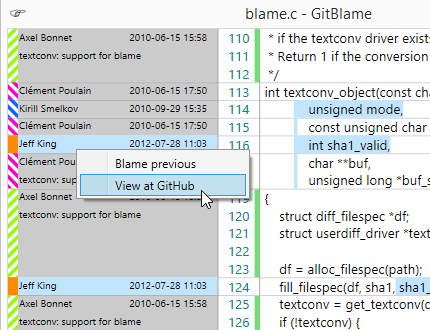

GitBlame is a streamlined GUI for viewing git blame output on Windows.

Information at a glance
Inline diffs (highlighted in blue) let you see at a glance if there was a significant change in this commit.

GitHub integration
Jump to GitHub (or GitHub Enterprise) to see the full diff in context, with just a click.
Download
GitHub Repo (for code/issues)